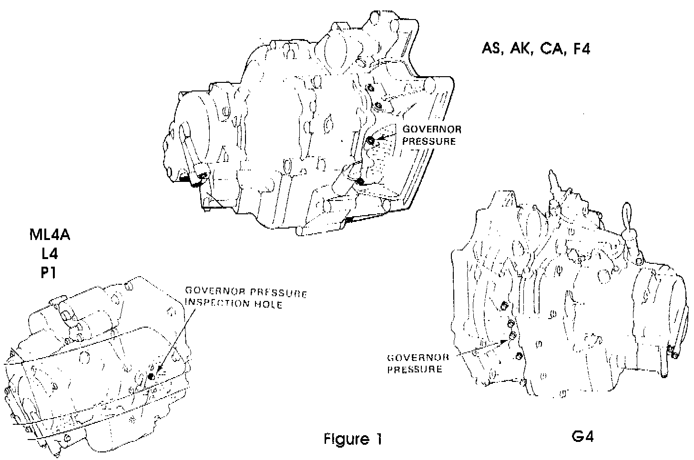
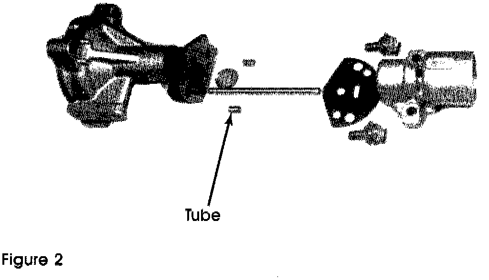
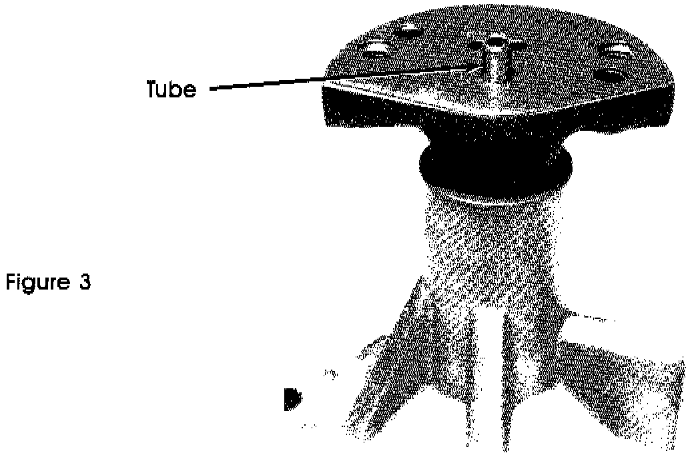

A/T - Starts In Wrong Gear/No Reverse
TECHNICAL BULLETIN # 200TRANSMISSION: Honda/Acura 4 speed
SUBJECT: Wrong gear starts/No reverse
APPLICATION: Honda/Acura 4 speeds
Honda / Acura Governor shifted units
Wrong gear starts / No reverse
A complaint of no reverse and/or wrong gear starts can be caused by either stuck valves in the valve body or high governor pressure at a stop. In order to find out which problem you have, you will need to check governor pressure.
CHECKING GOVERNOR PRESSURE.

Locate the governor pressure tap for the unit you're working on (Figure 1). Install a pressure gauge into the tap. (0-100 psi gauge is preferred since a higher pressure gauge won't be sensitive enough.) Check governor pressure at a stop, on the road, when the problem occurs.
If you show less than 2 psi, then you have sticky shift valves. Service or replace the valve body.
If you show 2 psi or more, then high governor pressure is your problem. You either have a sticky governor valve, or something else is allowing a higher pressure, (such as line pressure) to leak into the governor circuit.
CHECK THE GOVERNOR
Whether the governor valve appears to be sticky or not, use 600 grit (or finer) sandpaper to polish the valve. (Be careful not to round the sharp corners of the valve.)

Make sure that the governor is correctly assembled. There is a small tube that must be installed into the governor shaft (Figure 2). This tube separates governor feed oil (line pressure) from governor pressure, and if it's left out, line pressure will flow directly into the governor circuit causing high governor pressure.

If you need to find a replacement tube, make sure you use the correct length. These tubes are all 5mm (.196") in diameter, but come in two different lengths, 65mm (2.559") and 83mm (3.267"). The correct tube will protrude approximately 1/4" above the governor's steel separator plate (Figure 3).